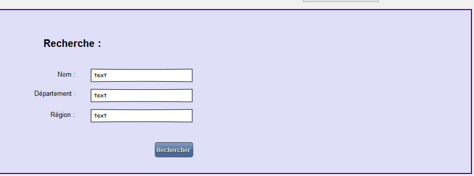
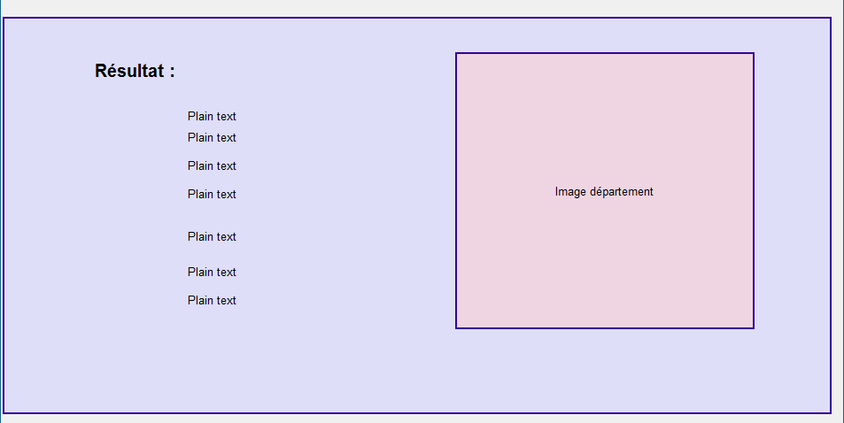

Lorsque l'on arrive sur la Page de recherche, par le biais du menu Recherche, seul le formulaire suivant est visible :

Après avoir saisi les différents champs et si la ville définie par les critères précédents existe alors la section suivante apparaîtra en dessous :

Si les critères ne correspondent à aucune ville, un message d'erreur le signalera.
Dans le cas où plusieurs auraient le même nom, alors nouveau apparaîtra un nouveau formulaire permettant de faire le choix entre les différentes possibilités.
Créé avec HelpNDoc Personal Edition: Créer des documents d'aide facilement